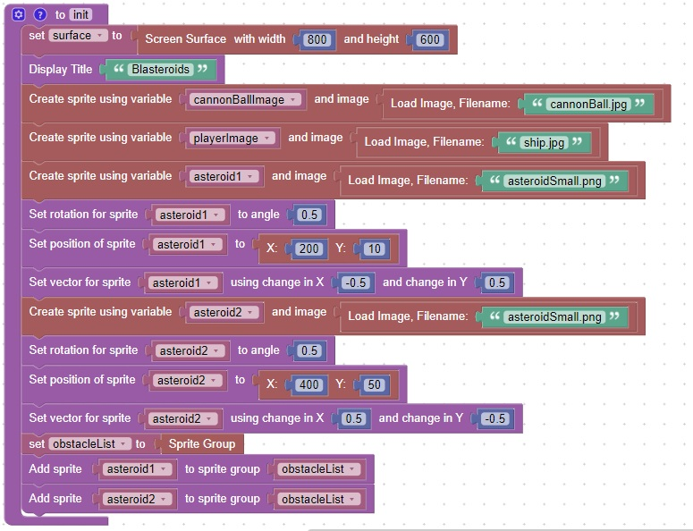
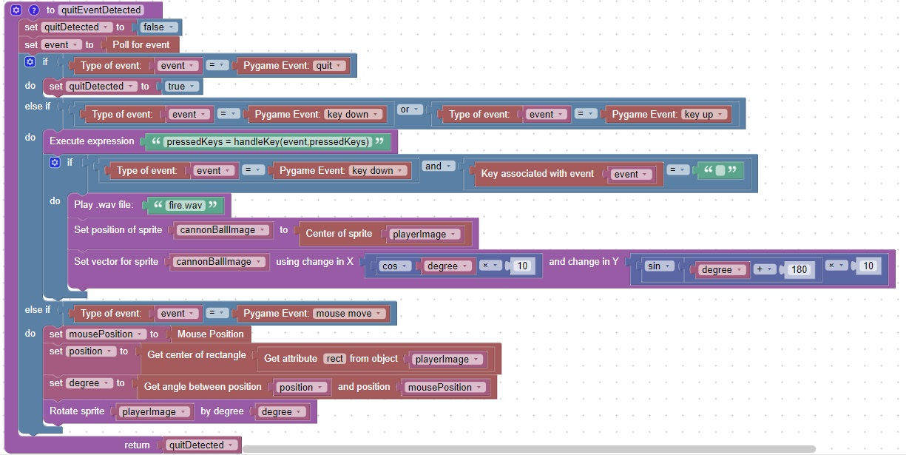
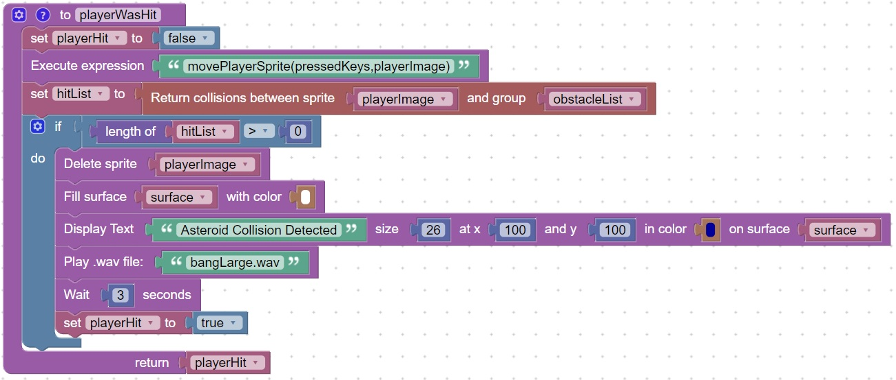
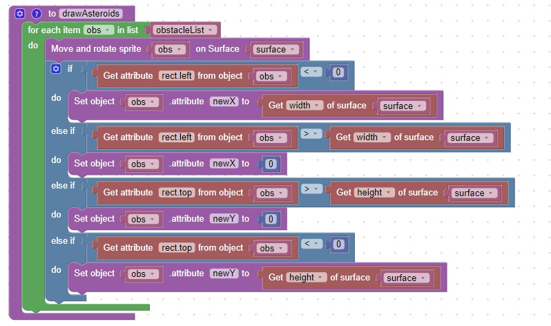
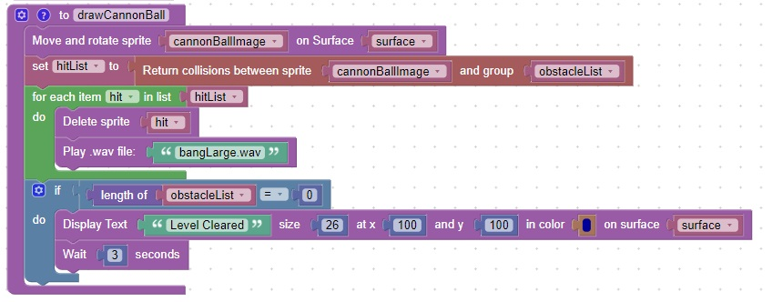
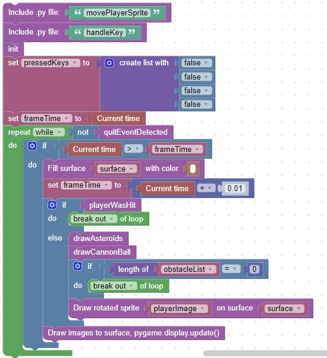

Blasteroids
This game, patterned after the classic asteroids
It is composed of 6 functions:
- init
- quitEventDetected
- playerWasHit
- drawAsteroids
- drawCannonBall
- main loop
There are also 2 external functions that are called:
Functions
init
This function will initialize and define variables used later

quitEventDetected
Function features
- Return True when the user closes the window
- "Fire" the cannonball when the player presses the space key
- Rotate the playerImage (ship) to face the mouse, when the mouse moves

playerWasHit
Function features
- Return True when the player sprite collides with an asteroid sprite
- Play a sound "bangLarge.wav" when the player collides with an asteroid sprite
- Display the text: Asteroid Collision Detected when the player collides with an asteroid sprite

drawAsteroids
Function features
- Move and rotate the asteroids
- If the asteroid moves off the screen, have it reappear on the "other" side

drawCannonBall
Function features
- Move the cannonBall on the surface
- If the cannonBall hits an asteroid, remove the asteroid and play the .wav file: "bangLarge.wav"
- If all the asteroids are destroyed display the text: "Level Cleared"

main loop
Function features
- Initialize variables by calling the init function
- End the program if the pygame window close,quit event is detected
- End the program if all asteroids are destroyed
- End the program if the player runs into an asteroid
- Clear the surface before drawing, 100 times a second
- Draw all asteroids, cannonBalls, and the player

Here is a video capturing the game play: video